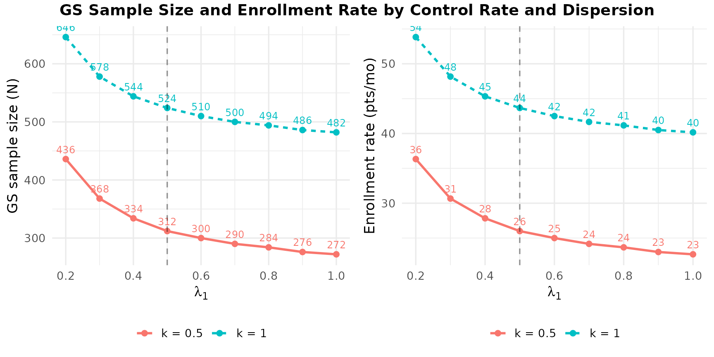
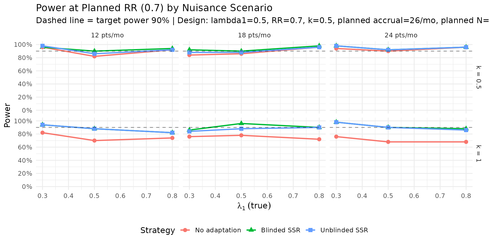

library(gsDesignNB)
library(gsDesign)
library(data.table)
library(MASS)
library(ggplot2)
library(dplyr)
library(gt)
library(DT)
library(future)
library(future.apply)Introduction
This vignette presents a simulation study evaluating sample size re-estimation (SSR) for group sequential trials with negative binomial recurrent event endpoints. We compare three strategies:
- No adaptation – the trial proceeds with the planned sample size.
- Blinded SSR (Friede and Schmidli 2010) – nuisance parameters are re-estimated from pooled (treatment-blinded) interim data.
- Unblinded SSR – nuisance parameters are re-estimated from treatment-specific interim data.
For hypothesis testing, all interim and final analyses use the
mutze_test() Wald statistic. This test underpins both
efficacy/futility crossing decisions and the unblinded-information
fallback used when blinded information estimation fails.
Note: Much of the simulation code in this vignette was generated with the assistance of a large language model (LLM) and then reviewed and refined by the package authors.
Interim analyses are triggered when the blinded statistical information reaches the planned fraction of the target, rather than at fixed calendar times. This ensures analyses occur at comparable information levels regardless of the true nuisance parameters.
Planned trial design
lambda1_plan <- 0.5
rr_plan <- 0.7
lambda2_plan <- lambda1_plan * rr_plan
k_plan <- 0.5
power_plan <- 0.9
alpha_plan <- 0.025
accrual_rate_plan <- 30
accrual_scenario_plan <- 18
accrual_dur_plan <- 12
max_followup <- 12
trial_dur_plan <- accrual_dur_plan + max_followup
event_gap_val <- 20 / 30.4375 # 20-day gap between events
analysis_times_plan <- c(9, 14, 24) # Calendar times under planFixed design
design_plan <- sample_size_nbinom(
lambda1 = lambda1_plan, lambda2 = lambda2_plan,
dispersion = k_plan, power = power_plan, alpha = alpha_plan,
accrual_rate = accrual_rate_plan,
accrual_duration = accrual_dur_plan,
trial_duration = trial_dur_plan,
max_followup = max_followup,
event_gap = event_gap_val
)
cat("Fixed-design sample size:", design_plan$n_total, "\n")
#> Fixed-design sample size: 258Group sequential design
We use a 3-analysis group sequential design with HSD efficacy spending and Cauchy futility spending calibrated so the futility bounds correspond to approximately RR = 0.9 at each analysis.
Specifically, sfl = sfCauchy with
sflpar = c(0.4, 0.75, 0.56, 0.63) gives planned lower
bounds that are close to declaring futility when the observed RR is
greater than about 0.9 at either interim. Because the design uses
non-binding futility (test.type = 4), ignoring a
lower-bound crossing does not invalidate the final efficacy decision,
which is still based on upper boundary control.
gs_plan <- design_plan |>
gsNBCalendar(
k = 3, test.type = 4, alpha = alpha_plan,
sfu = sfHSD, sfupar = -2,
sfl = sfCauchy, sflpar = c(0.4, 0.75, 0.56, 0.63),
analysis_times = analysis_times_plan
) |>
gsDesignNB::toInteger()
n_planned <- gs_plan$n_total[gs_plan$k]
target_info <- gs_plan$n.I[gs_plan$k]
planned_timing <- gs_plan$timing
gs_inflation <- n_planned / design_plan$n_total
accrual_rate_plan_eff <- n_planned / accrual_dur_plan
design_note <- paste0(
"Design: lambda1=", lambda1_plan,
", RR=", rr_plan,
", k=", k_plan,
", planned accrual=", round(accrual_rate_plan_eff, 1), "/mo",
", planned N=", n_planned,
", max follow-up=", max_followup, " mo"
)For Type I sensitivity we also calendar a group-sequential design at one-sided \alpha = 0.02 (same spending and nuisance assumptions as above). Its planned maximum enrollment is 330 subjects (fixed NB stage 274 before GS integer rounding; GS inflation factor 1.204). That design is used only for the RR = 1 non-binding Type I tables later in this vignette; all power summaries still use the \alpha = 0.025 design.
The group sequential inflation factor is 1.209, giving a planned sample size of 312 (up from the fixed-design 258) with an effective accrual rate of 26 patients per month.
gsBoundSummary(gs_plan,
deltaname = "RR", logdelta = TRUE,
Nname = "Information", timename = "Month",
digits = 4, ddigits = 2
) |>
as.data.frame() |>
gt() |>
tab_header(
title = "Planned Group Sequential Design",
subtitle = design_note
) |>
tab_footnote(
"Cauchy futility spending gives planned futility near observed RR > 0.9 at IA1/IA2; lower bounds are non-binding."
) |>
tab_footnote(
footnote = sprintf(
"Planned cumulative sample size: IA1 = %.0f, IA2 = %.0f, Final = %.0f.",
gs_plan$n_total[1], gs_plan$n_total[2], gs_plan$n_total[3]
)
)| Planned Group Sequential Design | |||
| Design: lambda1=0.5, RR=0.7, k=0.5, planned accrual=26/mo, planned N=312, max follow-up=12 mo | |||
| Analysis | Value | Efficacy | Futility |
|---|---|---|---|
| IA 1: 41% | Z | 2.5732 | 0.7060 |
| Information: 41.35 | p (1-sided) | 0.0050 | 0.2401 |
| Month: 9 | ~RR at bound | 0.6701 | 0.8960 |
| P(Cross) if RR=1 | 0.0050 | 0.7599 | |
| P(Cross) if RR=0.7 | 0.3897 | 0.0563 | |
| IA 2: 77% | Z | 2.2790 | 1.0491 |
| Information: 76.87 | p (1-sided) | 0.0113 | 0.1471 |
| Month: 14 | ~RR at bound | 0.7711 | 0.8872 |
| P(Cross) if RR=1 | 0.0138 | 0.8940 | |
| P(Cross) if RR=0.7 | 0.7984 | 0.0636 | |
| Final | Z | 2.0877 | 2.0877 |
| Information: 99.93 | p (1-sided) | 0.0184 | 0.0184 |
| Month: 24 | ~RR at bound | 0.8115 | 0.8115 |
| P(Cross) if RR=1 | 0.0221 | 0.9779 | |
| P(Cross) if RR=0.7 | 0.9018 | 0.0982 | |
| Cauchy futility spending gives planned futility near observed RR > 0.9 at IA1/IA2; lower bounds are non-binding. | |||
| Planned cumulative sample size: IA1 = 129, IA2 = 240, Final = 312. | |||
Group sequential sample size under each nuisance scenario
The figure below shows how the required group sequential sample size and monthly enrollment rate vary with the control rate \lambda_1 and dispersion k. Since the sample size does not depend on the enrollment pace (accrual rate only scales enrollment duration), we show two lines – one per k value – with \lambda_1 on the horizontal axis. The planned design assumptions (\lambda_1 = 0.5, k = 0.5) are marked with a dashed line.
lambda1_seq <- seq(0.2, 1.0, by = 0.1)
gs_n_grid <- expand.grid(
lambda1_true = lambda1_seq,
k_true = c(0.5, 1.0),
stringsAsFactors = FALSE
)
gs_n_grid$GS_N <- sapply(seq_len(nrow(gs_n_grid)), function(i) {
fixed_i <- tryCatch(
sample_size_nbinom(
lambda1 = gs_n_grid$lambda1_true[i],
lambda2 = gs_n_grid$lambda1_true[i] * rr_plan,
dispersion = gs_n_grid$k_true[i],
power = power_plan, alpha = alpha_plan,
accrual_rate = accrual_rate_plan,
accrual_duration = accrual_dur_plan,
trial_duration = trial_dur_plan,
max_followup = max_followup,
event_gap = event_gap_val
),
error = function(e) NULL
)
if (is.null(fixed_i)) return(NA_real_)
tryCatch({
g <- gsNBCalendar(fixed_i, k = 3, test.type = 4, alpha = alpha_plan,
sfu = sfHSD, sfupar = -2,
sfl = sfCauchy, sflpar = c(0.4, 0.75, 0.56, 0.63),
analysis_times = analysis_times_plan) |>
gsDesignNB::toInteger()
g$n_total[g$k]
}, error = function(e) NA_real_)
})
gs_n_grid$Accrual_rate <- gs_n_grid$GS_N / accrual_dur_plan
gs_n_grid$k_label <- paste0("k = ", gs_n_grid$k_true)
gs_n_grid$N_label <- round(gs_n_grid$GS_N)
gs_n_grid$Rate_label <- round(gs_n_grid$Accrual_rate)
plot_n <- ggplot(gs_n_grid, aes(x = lambda1_true, y = GS_N,
color = k_label, linetype = k_label)) +
geom_line(linewidth = 1) +
geom_point(size = 2) +
geom_text(aes(label = N_label), vjust = -0.8, size = 3.2, show.legend = FALSE) +
geom_vline(xintercept = lambda1_plan, linetype = "dashed", alpha = 0.4) +
labs(x = expression(lambda[1]), y = "GS sample size (N)",
color = NULL, linetype = NULL) +
theme_minimal(base_size = 13) +
theme(legend.position = "bottom")
plot_rate <- ggplot(gs_n_grid, aes(x = lambda1_true, y = Accrual_rate,
color = k_label, linetype = k_label)) +
geom_line(linewidth = 1) +
geom_point(size = 2) +
geom_text(aes(label = Rate_label), vjust = -0.8, size = 3.2, show.legend = FALSE) +
geom_vline(xintercept = lambda1_plan, linetype = "dashed", alpha = 0.4) +
labs(x = expression(lambda[1]), y = "Enrollment rate (pts/mo)",
color = NULL, linetype = NULL) +
theme_minimal(base_size = 13) +
theme(legend.position = "bottom")
gridExtra::grid.arrange(plot_n, plot_rate, ncol = 2,
top = grid::textGrob(
"GS Sample Size and Enrollment Rate by Control Rate and Dispersion",
gp = grid::gpar(fontsize = 14, fontface = "bold")
)
)
Across the range of \lambda_1 and k values considered, the required group sequential sample size ranges from 272 to 646. Higher dispersion (k = 1.0) consistently requires more subjects than k = 0.5, while higher control rates reduce the required N because each subject contributes more information. This wide range highlights why sample size re-estimation can be valuable when nuisance parameters are uncertain.
Expected information fraction at planned time of each interim
This table shows the expected information fraction at each planned interim calendar time under each nuisance scenario. Under the approximate design assumptions (bold green row), the information fractions match the GS design reasonably well (41.4%, 76.9%).
nuisance_grid <- expand.grid(
lambda1_true = c(0.3, 0.5, 0.8),
k_true = c(0.5, 1.0),
accrual_true = c(12, 18, 24),
stringsAsFactors = FALSE
)
# Accrual scenarios use effective monthly enrollment rates directly.
for (a in 1:2) {
col_name <- paste0("IF_analysis_", a)
nuisance_grid[[col_name]] <- sapply(seq_len(nrow(nuisance_grid)), function(i) {
accrual_eff <- nuisance_grid$accrual_true[i]
info_at_t <- compute_info_at_time(
analysis_time = analysis_times_plan[a],
accrual_rate = accrual_eff,
accrual_duration = accrual_dur_plan,
lambda1 = nuisance_grid$lambda1_true[i],
lambda2 = nuisance_grid$lambda1_true[i] * rr_plan,
dispersion = nuisance_grid$k_true[i],
max_followup = max_followup,
event_gap = event_gap_val
)
round(100 * info_at_t / target_info, 1)
})
}
nuisance_grid |>
gt() |>
tab_header(
title = "Expected Information Fraction (%) at Planned Time of Each Interim",
subtitle = design_note
) |>
cols_label(
lambda1_true = "lambda1",
k_true = "k",
accrual_true = "Accrual (pts/mo)",
IF_analysis_1 = paste0("IA 1 (mo ", analysis_times_plan[1], ")"),
IF_analysis_2 = paste0("IA 2 (mo ", analysis_times_plan[2], ")")
) |>
tab_footnote(
footnote = paste(
"Computed via compute_info_at_time() divided by planned final information.",
"Accrual values (12/18/24) are effective enrollment rates used directly.",
"Bold green = design assumptions.",
"With information-based timing, interims occur when blinded info reaches",
"the target fraction, so the calendar time varies by scenario."
)
)| Expected Information Fraction (%) at Planned Time of Each Interim | ||||
| Design: lambda1=0.5, RR=0.7, k=0.5, planned accrual=26/mo, planned N=312, max follow-up=12 mo | ||||
| lambda1 | k | Accrual (pts/mo) | IA 1 (mo 9) | IA 2 (mo 14) |
|---|---|---|---|---|
| 0.3 | 0.5 | 12 | 15.2 | 29.4 |
| 0.5 | 0.5 | 12 | 19.1 | 35.5 |
| 0.8 | 0.5 | 12 | 22.4 | 40.3 |
| 0.3 | 1.0 | 12 | 10.7 | 19.4 |
| 0.5 | 1.0 | 12 | 12.5 | 21.9 |
| 0.8 | 1.0 | 12 | 13.9 | 23.7 |
| 0.3 | 0.5 | 18 | 22.8 | 44.2 |
| 0.5 | 0.5 | 18 | 28.6 | 53.3 |
| 0.8 | 0.5 | 18 | 33.6 | 60.4 |
| 0.3 | 1.0 | 18 | 16.1 | 29.2 |
| 0.5 | 1.0 | 18 | 18.8 | 32.9 |
| 0.8 | 1.0 | 18 | 20.8 | 35.5 |
| 0.3 | 0.5 | 24 | 30.4 | 58.9 |
| 0.5 | 0.5 | 24 | 38.2 | 71.0 |
| 0.8 | 0.5 | 24 | 44.8 | 80.5 |
| 0.3 | 1.0 | 24 | 21.4 | 38.9 |
| 0.5 | 1.0 | 24 | 25.1 | 43.9 |
| 0.8 | 1.0 | 24 | 27.8 | 47.4 |
| Computed via compute_info_at_time() divided by planned final information. Accrual values (12/18/24) are effective enrollment rates used directly. Bold green = design assumptions. With information-based timing, interims occur when blinded info reaches the target fraction, so the calendar time varies by scenario. | ||||
Scenario grid
scenarios <- expand.grid(
lambda1_true = c(0.3, 0.5, 0.8),
k_true = c(0.5, 1.0),
accrual_true = c(12, 18, 24),
rr_true = c(0.6, 0.7, 0.85, 1.0, 1.1),
stringsAsFactors = FALSE
)
n_sims_initial <- 50
n_sims_production_power <- 3600L
n_sims_production_type1 <- 20000L
n_sims_production_rr_gt1 <- 1000L
use_production <- identical(Sys.getenv("GSDESIGNNB_PRODUCTION_SSR"), "true")
# Production rep counts for Type I (non-binding) tables only, without re-running the full power grid:
use_production_type1 <- use_production ||
identical(Sys.getenv("GSDESIGNNB_PRODUCTION_TYPE1"), "true")
scenarios$n_sims <- if (use_production) {
as.integer(ifelse(
scenarios$rr_true == 1,
n_sims_production_type1,
ifelse(scenarios$rr_true > 1, n_sims_production_rr_gt1, n_sims_production_power)
))
} else {
rep(as.integer(n_sims_initial), length.out = nrow(scenarios))
}
scenarios$accrual_eff <- scenarios$accrual_true
n_max <- 2 * n_planned
min_if_futility <- 0.3
target_if <- planned_timing # Target IF for each analysis
# IA2 adaptation gate (less strict than prior 80% / 2 months setting)
max_enrollment_frac_for_ia2 <- 1.00
min_months_to_close_for_adapt <- 2
analysis_lag_months <- 2
# Optional precomputed outputs for fast vignette builds
precomputed_basename <- "ssr_sim_vignette_outputs.rds"
project_root <- if (file.exists("DESCRIPTION")) "." else
if (file.exists("../DESCRIPTION")) ".." else "."
precomputed_source_path <- file.path(
project_root, "inst", "extdata", precomputed_basename
)
precomputed_file <- system.file("extdata", precomputed_basename, package = "gsDesignNB")
if (precomputed_file == "" && file.exists(precomputed_source_path)) {
precomputed_file <- precomputed_source_path
}
force_rerun <- identical(Sys.getenv("GSDESIGNNB_FORCE_SSR_SIM"), "true")
use_precomputed <- (!use_production) && !force_rerun && nzchar(precomputed_file)
save_precomputed <- identical(Sys.getenv("GSDESIGNNB_SAVE_SSR_OUTPUTS"), "true")
save_precomputed_path <- precomputed_source_path
# Re-run Type I (non-binding) sims even if RDS cache exists (see inst/extdata/ssr_type1_null_*.rds)
force_type1_sim <- identical(Sys.getenv("GSDESIGNNB_FORCE_TYPE1_SIM"), "true")
type1_cache_dir <- dirname(save_precomputed_path)
cat("Scenarios:", nrow(scenarios), "| Replicates:", sum(scenarios$n_sims), "\n")
#> Scenarios: 90 | Replicates: 4500
cat("Accrual rates used in simulation:", paste(round(sort(unique(scenarios$accrual_true)), 1), collapse = ", "),
"/month\n")
#> Accrual rates used in simulation: 12, 18, 24 /month
cat(
"IA2 SSR gate: adaptation uses cutoff at min(IA2 time, predicted close - ",
min_months_to_close_for_adapt,
" months); enrollment cap <= ",
100 * max_enrollment_frac_for_ia2,
"%.\n",
sep = ""
)
#> IA2 SSR gate: adaptation uses cutoff at min(IA2 time, predicted close - 2 months); enrollment cap <= 100%.
cat("Futility-stop sample size counts enrollment through +",
analysis_lag_months, " months after stop.\n", sep = "")
#> Futility-stop sample size counts enrollment through +2 months after stop.
cat("Production plan:", n_sims_production_power,
"reps per scenario for RR < 1 (power);",
n_sims_production_type1, "reps per scenario for RR = 1.0 (Type I);",
n_sims_production_rr_gt1, "reps per scenario for RR > 1.\n")
#> Production plan: 3600 reps per scenario for RR < 1 (power); 20000 reps per scenario for RR = 1.0 (Type I); 1000 reps per scenario for RR > 1.
cat("separate RR = 1 non-binding futility check uses", n_sims_production_type1, "reps per k.\n")
#> separate RR = 1 non-binding futility check uses 20000 reps per k.
if (use_precomputed) cat("Using precomputed outputs:", precomputed_file, "\n")
#> Using precomputed outputs: /home/runner/work/_temp/Library/gsDesignNB/extdata/ssr_sim_vignette_outputs.rds
cat(
"Type I (RR=1, non-binding) per-alpha cache: inst/extdata/ssr_type1_null_alpha025.rds,",
"ssr_type1_null_alpha020.rds; set GSDESIGNNB_FORCE_TYPE1_SIM=true to rebuild.\n"
)
#> Type I (RR=1, non-binding) per-alpha cache: inst/extdata/ssr_type1_null_alpha025.rds, ssr_type1_null_alpha020.rds; set GSDESIGNNB_FORCE_TYPE1_SIM=true to rebuild.
cat(
"Production Type I reps only (keep precomputed power grid):",
"GSDESIGNNB_PRODUCTION_TYPE1=true\n"
)
#> Production Type I reps only (keep precomputed power grid): GSDESIGNNB_PRODUCTION_TYPE1=trueSimulation engine
The reusable adaptive-trial logic now lives in
sim_ssr_nbinom(). This vignette keeps the scenario
grid, caching, and
visualization layers, but delegates the actual SSR
simulation engine to the package.
Interim analyses are information-based and use dynamic spending:
- IA1 (~40% IF): efficacy/futility only; no SSR adaptation.
- IA2 (target ~76% IF): efficacy/futility evaluated using observed IF and spending.
- SSR at IA2 only: nuisance estimates for adaptation use an IA2 adaptation cutoff time at \min(\text{IA2 time},\; \text{predicted enrollment close} - 2 \text{ months}), enforcing at least 2 months of operational lead-time. The enrollment-fraction cap is set in the scenario setup.
At each analysis, bounds are recalculated from observed information
and spending time. The blinded NB information estimate from
calculate_blinded_info() is used to determine interim
timing. If this estimate is unavailable or non-positive, timing falls
back to unblinded information from mutze_test() (tracked as
fallback counts in the results table).
make_enroll_rate <- function(accrual_eff) {
data.frame(rate = accrual_eff, duration = n_max / accrual_eff)
}
make_fail_rate <- function(lambda1_true, rr_true, k_true) {
data.frame(
treatment = c("Control", "Experimental"),
rate = c(lambda1_true, lambda1_true * rr_true),
dispersion = k_true
)
}
dropout_rate_sim <- data.frame(
treatment = c("Control", "Experimental"),
rate = c(0, 0),
duration = c(100, 100)
)
run_scenario <- function(sc_idx) {
sc <- scenarios[sc_idx, ]
message(sprintf(
"Starting scenario %d / %d: RR=%.2f, lambda1=%.2f, k=%.2f, accrual=%.1f",
sc_idx, nrow(scenarios), sc$rr_true, sc$lambda1_true, sc$k_true, sc$accrual_true
))
sim_res <- sim_ssr_nbinom(
n_sims = sc$n_sims,
enroll_rate = make_enroll_rate(sc$accrual_eff),
fail_rate = make_fail_rate(sc$lambda1_true, sc$rr_true, sc$k_true),
dropout_rate = dropout_rate_sim,
max_followup = max_followup,
design = gs_plan,
n_max = n_max,
min_if_futility = min_if_futility,
max_enrollment_frac_for_adapt = max_enrollment_frac_for_ia2,
min_months_to_close_for_adapt = min_months_to_close_for_adapt,
analysis_lag_months = analysis_lag_months,
event_gap = event_gap_val,
ignore_futility = FALSE,
metadata = list(
lambda1_true = sc$lambda1_true,
k_true = sc$k_true,
accrual_true = sc$accrual_true,
accrual_eff = sc$accrual_eff,
rr_true = sc$rr_true
),
seed = 1000 + sc_idx
)
sim_res$trial_results
}
run_null_type1_sims <- function(gs_plan_x, alpha_plan_x, null_n) {
null_all <- vector("list", length(null_k_scenarios))
for (i in seq_along(null_k_scenarios)) {
k_null <- null_k_scenarios[i]
sim_res <- sim_ssr_nbinom(
n_sims = null_n,
enroll_rate = make_enroll_rate(accrual_scenario_plan),
fail_rate = make_fail_rate(lambda1_plan, 1.0, k_null),
dropout_rate = dropout_rate_sim,
max_followup = max_followup,
design = gs_plan_x,
n_max = n_max,
min_if_futility = min_if_futility,
max_enrollment_frac_for_adapt = max_enrollment_frac_for_ia2,
min_months_to_close_for_adapt = min_months_to_close_for_adapt,
analysis_lag_months = analysis_lag_months,
event_gap = event_gap_val,
ignore_futility = TRUE,
metadata = list(k_true = k_null),
seed = 5000 + i
)
null_all[[i]] <- sim_res$trial_results
}
null_all <- Filter(Negate(is.null), null_all)
if (length(null_all) == 0) {
return(data.table(
k_true = numeric(0), strategy = character(0),
n_sims = integer(0), type1_error = numeric(0),
cross_ia1 = numeric(0), cross_ia2 = numeric(0), cross_final = numeric(0),
mean_n = numeric(0), adapted_rate = numeric(0)
))
}
null_dt <- rbindlist(null_all)
sm <- summarize_ssr_sim(null_dt, by = c("k_true", "strategy"))$trial_summary
sm <- as.data.frame(sm)
sm$type1_error <- sm$rejection_rate
sm$adapted_rate <- sm$pct_adapted / 100
sm[, c(
"k_true", "strategy", "n_sims", "type1_error",
"cross_ia1", "cross_ia2", "cross_final", "mean_n", "adapted_rate"
)]
}Running simulations
precomputed_outputs <- NULL
if (use_precomputed) {
precomputed_outputs <- readRDS(precomputed_file)
all_results <- as.data.frame(precomputed_outputs$plot_data)
sim_runtime_seconds <- precomputed_outputs$sim_runtime_seconds
workers <- if (!is.null(precomputed_outputs$workers)) {
as.integer(precomputed_outputs$workers)
} else {
max(1L, future::availableCores() - 1L)
}
sim_mode <- "Loaded precomputed outputs"
} else {
sim_start <- Sys.time()
workers <- max(1L, future::availableCores() - 1L)
old_plan <- future::plan()
future::plan(future::multisession, workers = workers)
all_results <- lapply(seq_len(nrow(scenarios)), run_scenario)
future::plan(old_plan)
all_results <- Filter(Negate(is.null), all_results)
all_results <- do.call(rbind, all_results)
sim_runtime_seconds <- as.numeric(difftime(Sys.time(), sim_start, units = "secs"))
sim_mode <- "Fresh simulation"
}
# Backward-compatible defaults for precomputed files from older vignette versions
required_cols <- c(
"ia2_adapt_cut_time",
"ia2_enroll_frac", "ia2_months_to_close_pred",
"ia2_adapt_allowed", "ia2_adapt_applied"
)
missing_cols <- setdiff(required_cols, names(all_results))
if (length(missing_cols) > 0) {
for (nm in missing_cols) all_results[[nm]] <- NA
}
cat("Simulation mode:", sim_mode, "\n")
#> Simulation mode: Loaded precomputed outputs
cat("Workers:", workers, "\n")
#> Workers: 11
cat("Rows:", nrow(all_results), "\n")
#> Rows: 13500
if (!is.null(sim_runtime_seconds) && is.finite(sim_runtime_seconds)) {
cat(sprintf("Simulation wall time: %.2f minutes (%.1f seconds)\n",
sim_runtime_seconds / 60, sim_runtime_seconds))
}
#> Simulation wall time: 5.65 minutes (339.1 seconds)
# RR = 1.0 non-binding futility check (Type I), for nominal alpha = 0.025 and 0.02 designs.
# Power simulations elsewhere use alpha_plan (0.025) only.
# Results cache: inst/extdata/ssr_type1_null_alpha025.rds and ssr_type1_null_alpha020.rds
# Re-run after changing sim logic or rep count: Sys.setenv(GSDESIGNNB_FORCE_TYPE1_SIM = "true")
null_nonbinding_n <- if (use_production_type1) n_sims_production_type1 else n_sims_initial
null_k_scenarios <- c(k_plan, 1.0)
type1_designs <- list(
list(
key = "alpha025",
label = "0.025",
gs_plan = gs_plan,
n_planned = n_planned,
target_info = target_info,
planned_timing = planned_timing,
gs_inflation = gs_inflation,
alpha_plan = alpha_plan
),
list(
key = "alpha020",
label = "0.02",
gs_plan = gs_plan_type1_sens,
n_planned = n_planned_type1_sens,
target_info = target_info_type1_sens,
planned_timing = planned_timing_type1_sens,
gs_inflation = gs_inflation_type1_sens,
alpha_plan = alpha_plan_type1_sens
)
)
null_nonbinding_by_alpha <- list()
null_nonbinding_runtime_by_alpha <- list()
null_nonbinding_mode_by_alpha <- list()
bundle_type1_ok <- isTRUE(use_precomputed) &&
is.list(precomputed_outputs$null_nonbinding_by_alpha) &&
all(c("0.025", "0.02") %in% names(precomputed_outputs$null_nonbinding_by_alpha))
if (bundle_type1_ok) {
null_nonbinding_by_alpha[["0.025"]] <-
as.data.table(precomputed_outputs$null_nonbinding_by_alpha[["0.025"]])
null_nonbinding_by_alpha[["0.02"]] <-
as.data.table(precomputed_outputs$null_nonbinding_by_alpha[["0.02"]])
br <- precomputed_outputs$null_nonbinding_runtime_by_alpha
if (!is.null(br)) {
null_nonbinding_runtime_by_alpha <- as.list(br)
} else {
null_nonbinding_runtime_by_alpha <- list(
"0.025" = precomputed_outputs$null_nonbinding_runtime_seconds,
"0.02" = NA_real_
)
}
null_nonbinding_mode_by_alpha <- list("0.025" = "Precomputed bundle", "0.02" = "Precomputed bundle")
} else {
dir.create(type1_cache_dir, recursive = TRUE, showWarnings = FALSE)
for (td in type1_designs) {
cache_path <- file.path(type1_cache_dir, paste0("ssr_type1_null_", td$key, ".rds"))
loaded <- FALSE
if (!force_type1_sim && file.exists(cache_path)) {
cr <- tryCatch(readRDS(cache_path), error = function(e) NULL)
same_n <- is.list(cr) && isTRUE(
as.integer(cr$null_nonbinding_n) == as.integer(null_nonbinding_n)
)
if (same_n) {
null_nonbinding_by_alpha[[td$label]] <- as.data.table(cr$summary)
null_nonbinding_runtime_by_alpha[[td$label]] <- cr$runtime_seconds
null_nonbinding_mode_by_alpha[[td$label]] <- "Cached RDS"
loaded <- TRUE
}
}
if (!loaded && td$key == "alpha025" && isTRUE(use_precomputed) &&
!is.null(precomputed_outputs$null_nonbinding_summary)) {
null_nonbinding_by_alpha[[td$label]] <-
as.data.table(precomputed_outputs$null_nonbinding_summary)
null_nonbinding_runtime_by_alpha[[td$label]] <-
precomputed_outputs$null_nonbinding_runtime_seconds
null_nonbinding_mode_by_alpha[[td$label]] <- "Precomputed bundle (legacy)"
loaded <- TRUE
}
if (!loaded) {
cat("Running Type I (non-binding) sims: design alpha =", td$label, "\n")
t0 <- Sys.time()
sm <- run_null_type1_sims(td$gs_plan, td$alpha_plan, null_nonbinding_n)
rt <- as.numeric(difftime(Sys.time(), t0, units = "secs"))
null_nonbinding_by_alpha[[td$label]] <- sm
null_nonbinding_runtime_by_alpha[[td$label]] <- rt
null_nonbinding_mode_by_alpha[[td$label]] <- "Fresh simulation"
saveRDS(
list(
summary = as.data.frame(sm),
runtime_seconds = rt,
null_nonbinding_n = null_nonbinding_n,
alpha_design = td$alpha_plan,
generated_at = as.character(Sys.time())
),
cache_path
)
cat(" Saved:", cache_path, "\n")
}
}
}
null_nonbinding_summary <- null_nonbinding_by_alpha[["0.025"]]
null_nonbinding_runtime_seconds <- null_nonbinding_runtime_by_alpha[["0.025"]]
null_nonbinding_mode <- paste0(
"0.025: ", null_nonbinding_mode_by_alpha[["0.025"]],
" | 0.02: ", null_nonbinding_mode_by_alpha[["0.02"]]
)
cat("RR=1 non-binding Type I modes:", null_nonbinding_mode, "\n")
#> RR=1 non-binding Type I modes: 0.025: Precomputed bundle | 0.02: Precomputed bundle
cat("RR=1 non-binding replications per k:", null_nonbinding_n, "\n")
#> RR=1 non-binding replications per k: 50
cat("k scenarios:", paste(null_k_scenarios, collapse = ", "), "\n")
#> k scenarios: 0.5, 1Results
dt <- as.data.table(all_results)
summary_dt <- summarize_ssr_sim(
dt,
by = c("lambda1_true", "k_true", "accrual_true", "rr_true", "strategy")
)$trial_summary |>
as.data.table()
plot_data <- dt[, .(
lambda1_true, k_true, accrual_true, rr_true, strategy,
reject, futility, reject_stage, futility_stage,
n_adapted, adapted,
participants_with_events_stop, events_observed_stop,
if_ia1, if_ia2, if_final,
ia1_time, ia2_time, final_time,
ia1_fallback, ia2_fallback,
participants_with_events_ia1, participants_with_events_ia2,
participants_with_events_final,
events_observed_ia1, events_observed_ia2, events_observed_final,
adapt_cut_time, adapt_enroll_frac, adapt_months_to_close_pred,
adapt_allowed, adapt_applied,
ia2_adapt_cut_time,
ia2_enroll_frac, ia2_months_to_close_pred,
ia2_adapt_allowed, ia2_adapt_applied
)]
dir.create(dirname(save_precomputed_path), recursive = TRUE, showWarnings = FALSE)
saveRDS(
list(
plot_data = as.data.frame(plot_data),
sim_runtime_seconds = sim_runtime_seconds,
workers = workers,
null_nonbinding_summary = as.data.frame(null_nonbinding_summary),
null_nonbinding_by_alpha = lapply(null_nonbinding_by_alpha, as.data.frame),
null_nonbinding_n = null_nonbinding_n,
null_nonbinding_runtime_seconds = null_nonbinding_runtime_seconds,
null_nonbinding_runtime_by_alpha = null_nonbinding_runtime_by_alpha,
generated_at = as.character(Sys.time()),
settings = list(
n_sims_initial = n_sims_initial,
n_sims_production_power = n_sims_production_power,
n_sims_production_type1 = n_sims_production_type1,
n_sims_production_rr_gt1 = n_sims_production_rr_gt1,
use_production = use_production,
use_production_type1 = use_production_type1,
design_note = design_note
)
),
save_precomputed_path
)
cat("Saved precomputed vignette outputs to:", save_precomputed_path, "\n")
runtime_df <- data.frame(
Metric = c("Simulation mode", "Workers", "Scenarios", "Replicates", "Rows", "Wall time (minutes)"),
Value = c(
sim_mode,
as.character(workers),
nrow(scenarios),
sum(scenarios$n_sims),
nrow(all_results),
if (!is.null(sim_runtime_seconds) && is.finite(sim_runtime_seconds))
sprintf("%.2f", sim_runtime_seconds / 60) else "NA"
)
)
runtime_df |>
gt() |>
tab_header(
title = "Simulation Runtime",
subtitle = "Use precomputed outputs to avoid rerunning on pkgdown/CI/CRAN builds"
)| Simulation Runtime | |
| Use precomputed outputs to avoid rerunning on pkgdown/CI/CRAN builds | |
| Metric | Value |
|---|---|
| Simulation mode | Loaded precomputed outputs |
| Workers | 11 |
| Scenarios | 90 |
| Replicates | 4500 |
| Rows | 13500 |
| Wall time (minutes) | 5.65 |
# Two designs: nominal one-sided alpha = 0.025 (main power sims) vs 0.02 (Type I sensitivity).
for (alab in c("0.025", "0.02")) {
cat("\n\n### Type I error table: nominal design alpha = ", alab, "\n\n", sep = "")
null_df <- as.data.frame(null_nonbinding_by_alpha[[alab]])
if (!"k_true" %in% names(null_df)) null_df$k_true <- NA_real_
rt_min <- null_nonbinding_runtime_by_alpha[[alab]]
rt_str <- if (is.finite(rt_min)) paste0(round(rt_min / 60, 2), " min") else "NA"
null_display <- null_df |>
dplyr::transmute(
k = k_true,
Strategy = strategy,
`Type I error` = round(type1_error, 4),
`IA1` = round(cross_ia1, 4),
`IA2` = round(cross_ia2, 4),
`Final` = round(cross_final, 4),
`Mean N` = round(mean_n, 1),
`SSR applied (%)` = round(100 * adapted_rate, 1)
)
tab <- null_display |>
gt() |>
tab_header(
title = "Type I Error Under RR = 1.0 (Non-binding Futility)",
subtitle = paste0(
"Replications per k: ", null_nonbinding_n,
" | ", null_nonbinding_mode_by_alpha[[alab]],
" | Runtime: ", rt_str
)
) |>
tab_spanner(label = "Efficacy crossing at", columns = c("IA1", "IA2", "Final")) |>
tab_footnote(
paste(
"Futility stopping is ignored (non-binding) so all trials continue to",
"the final analysis unless stopped for efficacy.",
"'SSR applied' is the percentage of trials where the adapted N exceeded",
"the planned N (planning k =", k_plan, ").",
"Under the null, SSR may still increase N because",
"nuisance parameter estimates can differ from planning values.",
"Each table uses the group-sequential design built at the stated nominal alpha;",
"power results elsewhere use alpha = 0.025 only."
)
)
print(tab)
}Type I error table: nominal design alpha = 0.025
| Type I Error Under RR = 1.0 (Non-binding Futility) | |||||||
| Replications per k: 50 | Precomputed bundle | Runtime: 57.28 min | |||||||
| k | Strategy | Type I error |
Efficacy crossing at
|
Mean N | SSR applied (%) | ||
|---|---|---|---|---|---|---|---|
| IA1 | IA2 | Final | |||||
| 0.5 | No adaptation | 0.0318 | 0.0078 | 0.0120 | 0.0120 | 312.0 | 0.0 |
| 0.5 | Blinded SSR | 0.0344 | 0.0078 | 0.0120 | 0.0145 | 479.3 | 96.0 |
| 0.5 | Unblinded SSR | 0.0327 | 0.0078 | 0.0120 | 0.0128 | 329.3 | 46.0 |
| 1.0 | No adaptation | 0.0236 | 0.0069 | 0.0056 | 0.0110 | 312.0 | 0.0 |
| 1.0 | Blinded SSR | 0.0304 | 0.0069 | 0.0056 | 0.0178 | 619.7 | 98.6 |
| 1.0 | Unblinded SSR | 0.0284 | 0.0069 | 0.0056 | 0.0158 | 519.7 | 98.6 |
| Futility stopping is ignored (non-binding) so all trials continue to the final analysis unless stopped for efficacy. ‘SSR applied’ is the percentage of trials where the adapted N exceeded the planned N (planning k = 0.5 ). Under the null, SSR may still increase N because nuisance parameter estimates can differ from planning values. Each table uses the group-sequential design built at the stated nominal alpha; power results elsewhere use alpha = 0.025 only. | |||||||
Type I error table: nominal design alpha = 0.02
| Type I Error Under RR = 1.0 (Non-binding Futility) | |||||||
| Replications per k: 50 | Precomputed bundle | Runtime: 58.75 min | |||||||
| k | Strategy | Type I error |
Efficacy crossing at
|
Mean N | SSR applied (%) | ||
|---|---|---|---|---|---|---|---|
| IA1 | IA2 | Final | |||||
| 0.5 | No adaptation | 0.0253 | 0.0060 | 0.0094 | 0.0100 | 330.0 | 0.0 |
| 0.5 | Blinded SSR | 0.0286 | 0.0060 | 0.0094 | 0.0134 | 505.3 | 96.5 |
| 0.5 | Unblinded SSR | 0.0257 | 0.0060 | 0.0094 | 0.0104 | 346.4 | 45.0 |
| 1.0 | No adaptation | 0.0202 | 0.0053 | 0.0053 | 0.0096 | 330.0 | 0.0 |
| 1.0 | Blinded SSR | 0.0253 | 0.0053 | 0.0053 | 0.0147 | 620.7 | 98.9 |
| 1.0 | Unblinded SSR | 0.0249 | 0.0053 | 0.0053 | 0.0143 | 547.6 | 98.9 |
| Futility stopping is ignored (non-binding) so all trials continue to the final analysis unless stopped for efficacy. ‘SSR applied’ is the percentage of trials where the adapted N exceeded the planned N (planning k = 0.5 ). Under the null, SSR may still increase N because nuisance parameter estimates can differ from planning values. Each table uses the group-sequential design built at the stated nominal alpha; power results elsewhere use alpha = 0.025 only. | |||||||
Power by rate ratio and SSR strategy
power_avg <- dt[rr_true < 1.0, .(
power = mean(reject, na.rm = TRUE),
mean_final_if = mean(if_final, na.rm = TRUE),
mean_final_month = mean(final_time, na.rm = TRUE)
), by = .(rr_true, strategy)]
ggplot(power_avg, aes(x = rr_true, y = power,
color = strategy, linetype = strategy)) +
geom_line(linewidth = 1) +
geom_point(size = 2.5) +
geom_hline(yintercept = power_plan, linetype = "dashed", alpha = 0.4) +
scale_y_continuous(
limits = c(0, 1),
breaks = seq(0, 1, 0.2),
labels = scales::percent
) +
scale_x_continuous(breaks = seq(0.5, 0.9, 0.1)) +
labs(
title = "Power by Rate Ratio and SSR Strategy",
subtitle = paste("Averaged across nuisance scenarios |", design_note),
x = "True Rate Ratio", y = "Power",
color = "Strategy", linetype = "Strategy"
) +
theme_minimal(base_size = 13) +
theme(legend.position = "bottom")
power_rr_plan <- summary_dt[
rr_true == rr_plan &
strategy %in% c("No adaptation", "Blinded SSR", "Unblinded SSR")
]
power_rr_plan[, strategy := factor(strategy,
levels = c("No adaptation", "Blinded SSR", "Unblinded SSR"))]
power_rr_plan[, k_label := paste0("k = ", k_true)]
power_rr_plan[, accrual_label := paste0(accrual_true, " pts/mo")]
ggplot(power_rr_plan,
aes(x = lambda1_true, y = rejection_rate,
color = strategy, shape = strategy)) +
geom_line(linewidth = 0.9) +
geom_point(size = 2.5) +
geom_hline(yintercept = power_plan, linetype = "dashed", alpha = 0.4) +
facet_grid(k_label ~ accrual_label) +
scale_y_continuous(limits = c(0, 1), breaks = seq(0, 1, 0.2),
labels = scales::percent) +
labs(
title = sprintf("Power at Planned RR (%.1f) by Nuisance Scenario", rr_plan),
subtitle = paste("Dashed line = target power", scales::percent(power_plan),
"|", design_note),
x = expression(lambda[1]~(true)), y = "Power",
color = "Strategy", shape = "Strategy"
) +
theme_minimal(base_size = 12) +
theme(legend.position = "bottom")


Calendar and information at each analysis
The plots below use split (side-by-side) violin distributions for k = 0.5 and k = 1.0, with vertical panels for IA1, IA2, and Final analysis. Panels use free y-scales.
time_long <- dt[strategy == "No adaptation" & rr_true == rr_plan, .(
lambda1_true, k_true, accrual_true,
IA1 = ia1_time, IA2 = ia2_time, Final = final_time
)]
time_long <- data.table::melt(
time_long,
id.vars = c("lambda1_true", "k_true", "accrual_true"),
variable.name = "analysis",
value.name = "calendar_time"
)
time_long[, analysis := factor(analysis, levels = c("IA1", "IA2", "Final"))]
time_long[, lambda1_label := paste0("lambda1 = ", lambda1_true)]
time_long[, k_label := paste0("k = ", k_true)]
planned_time_df <- data.frame(
analysis = factor(c("IA1", "IA2", "Final"), levels = c("IA1", "IA2", "Final")),
planned_time = c(analysis_times_plan[1], analysis_times_plan[2], analysis_times_plan[3])
)
ggplot(time_long,
aes(x = factor(accrual_true), y = calendar_time, fill = factor(k_true))) +
geom_violin(position = position_dodge(width = 0.85),
alpha = 0.7, scale = "width", trim = FALSE) +
geom_hline(
data = planned_time_df,
aes(yintercept = planned_time),
linetype = "dashed", color = "darkgreen", inherit.aes = FALSE
) +
facet_grid(analysis ~ lambda1_label, scales = "free_y") +
scale_fill_manual(values = c("0.5" = "#6BAED6", "1" = "#2171B5")) +
labs(
title = "Calendar Time Distribution by Analysis (RR = 0.7, No adaptation)",
subtitle = paste("Dashed green = planned analysis time |", design_note),
x = "Accrual rate (pts/month)",
y = "Calendar month",
fill = "k"
) +
theme_minimal(base_size = 12) +
theme(legend.position = "bottom")
#> Warning: Removed 1093 rows containing non-finite outside the scale range
#> (`stat_ydensity()`).
if_long <- dt[strategy == "No adaptation" & rr_true == rr_plan, .(
lambda1_true, k_true, accrual_true,
IA1 = 100 * if_ia1, IA2 = 100 * if_ia2, Final = 100 * if_final
)]
if_long <- data.table::melt(
if_long,
id.vars = c("lambda1_true", "k_true", "accrual_true"),
variable.name = "analysis",
value.name = "info_fraction"
)
if_long[, analysis := factor(analysis, levels = c("IA1", "IA2", "Final"))]
if_long[, lambda1_label := paste0("lambda1 = ", lambda1_true)]
planned_if_df <- data.frame(
analysis = factor(c("IA1", "IA2", "Final"), levels = c("IA1", "IA2", "Final")),
planned_if = 100 * c(planned_timing[1], planned_timing[2], 1)
)
ggplot(if_long,
aes(x = factor(accrual_true), y = info_fraction, fill = factor(k_true))) +
geom_violin(position = position_dodge(width = 0.85),
alpha = 0.7, scale = "width", trim = FALSE) +
geom_hline(
data = planned_if_df,
aes(yintercept = planned_if),
linetype = "dashed", color = "darkgreen", inherit.aes = FALSE
) +
facet_grid(analysis ~ lambda1_label, scales = "free_y") +
scale_fill_manual(values = c("0.5" = "#6BAED6", "1" = "#2171B5")) +
labs(
title = "Information Fraction Distribution by Analysis (RR = 0.7, No adaptation)",
subtitle = paste("Dashed green = planned information fraction |", design_note),
x = "Accrual rate (pts/month)",
y = "Information fraction (%)",
fill = "k"
) +
theme_minimal(base_size = 12) +
theme(legend.position = "bottom")
#> Warning: Removed 1093 rows containing non-finite outside the scale range
#> (`stat_ydensity()`).
Discussion
Key findings
Type I error. Under the null (RR \geq 1.0), nominal one-sided control is 2.5%. In production runs we use 20 000 replicates for each main-grid scenario with RR = 1.0; at that count, Monte Carlo error around 2.5% is only on the order of \pm 0.2 percentage points (roughly 95%). In most nuisance/strategy combinations the estimated Type I error exceeds that band—i.e., it is inflated relative to what sampling fluctuation alone would typically explain. (Default pkgdown/CRAN builds use far fewer replicates for speed; rely on production output for quantitative Type I conclusions.) For RR = 1.0, futility stopping is also evaluated with futility ignored (non-binding supplement) in the dedicated tables above. A parallel table uses a group-sequential design planned at nominal \alpha = 0.02 to illustrate how a more conservative boundary calibration affects simulated Type I error (power simulations still use \alpha = 0.025).
Largest no-adaptation power deficit. At planned RR = 0.7, the largest deficit from the 90% target under no adaptation is concentrated in scenarios with lower event rates and larger dispersion (see the “Power Shortfall Without Adaptation” table).
IA2-only adaptation recovers power where information is low. In lower event-rate / higher-dispersion scenarios, IA2 adaptation raises final information and materially improves power versus no adaptation, while still preserving IA1-only monitoring (see “Power by nuisance scenario” and “Final information at final analysis by strategy”).
Information-based interim timing
By triggering interims when blinded information reaches the target fraction (rather than at fixed calendar times), the information fractions are stabilized across scenarios. This prevents the anomaly where high event rates cause excessive information at a fixed calendar time, leading to overspending or premature decisions.
In this update, IA2 remains information-based while adaptation uses a lead-time cutoff of at least 2 months before predicted enrollment close.
Futility at low information
Futility assessment is deferred when the observed information fraction is below 30%. The spending function approach uses \text{usTime} = \text{lsTime} = \min(t_{\text{planned}}, t_{\text{actual}}) to cap spending.
IA1 includes efficacy/futility monitoring but does not permit SSR. SSR is attempted only at IA2. For operational feasibility, SSR uses an adaptation cutoff at \min(\text{IA2 time},\; \text{predicted enrollment close} - 2 \text{ months}), with enrollment fraction at or below 100%.
When a trial stops early for futility, the reported final sample size includes subjects enrolled by the stop analysis date plus 2 months to reflect enrollment that continues during analysis/decision implementation.
Futility and efficacy crossing percentages are reported separately for IA1 and IA2 in the main simulation table.
Blinded information fallback
At each candidate cut time the simulation first attempts to estimate
blinded statistical information via
calculate_blinded_info(). If the blinded estimate is
unavailable or non-positive (e.g., too few events for the NB model to
converge), the simulation falls back to unblinded information from
mutze_test() (\mathcal{I} =
1/\text{SE}^2). If both methods fail, a hard-coded constant of
100 is used as a last-resort placeholder so that the search does not
stall. The simulation results table reports the number of trials that
required this fallback at each interim analysis.
Computational considerations
Production-scale runs use 3 600 replicates per scenario for RR < 1 (power), 20 000 for each scenario with
RR = 1.0 (Type I), and 1 000 for RR
> 1 (interior null, lower priority
for precision), plus 20 000 replicates per k in the separate RR = 1 non-binding futility
check; these are computationally intensive. Parallel execution via the
future / future.apply framework is essential.
The simulation runtime table above reports the wall-clock time and
number of workers used for the current build. For reference, a
production run on a Mac Studio with an M4 chip using 11 of 12 available
cores completed in approximately 2–3 hours.